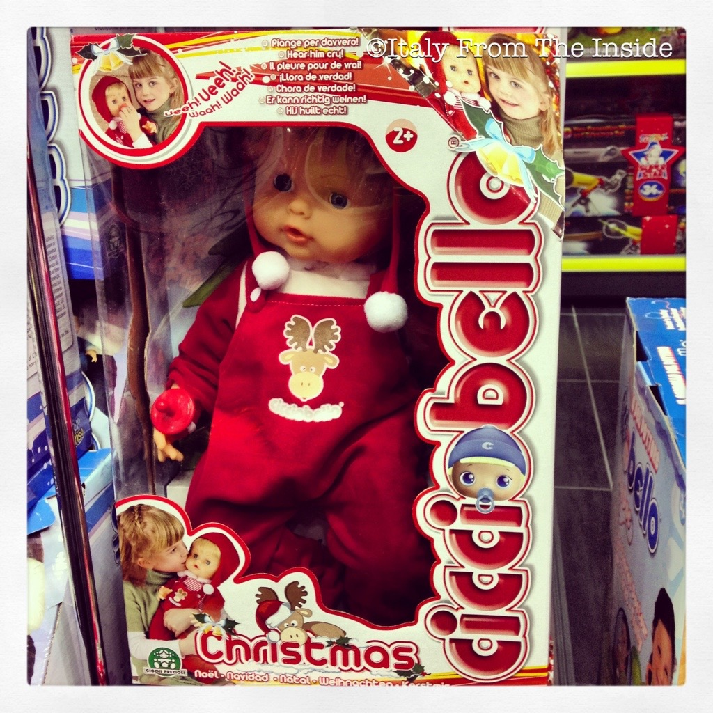

I'm sure that if you ask any Italian what the most famous Italian doll is, they will respond Cicciobello. This almost angelic looking doll was first introduced in 1962 and has delighted thousands of Italian children since. What you see in the photo is the Christmas version of this iconic Italian toy.